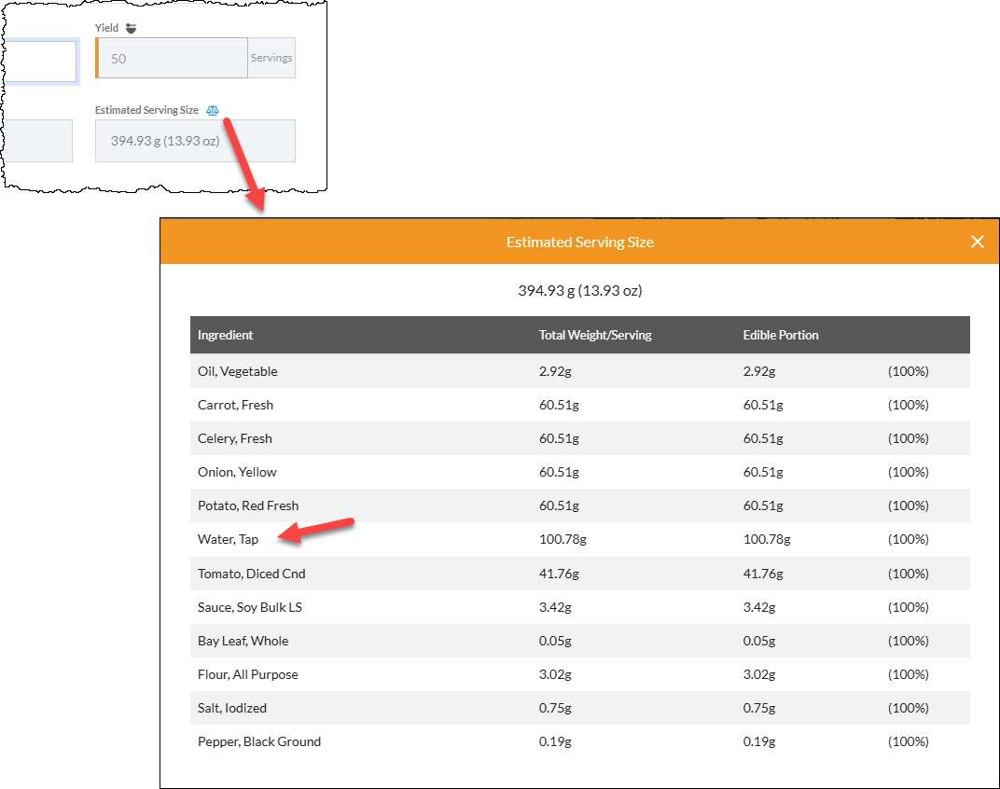

I have a confession. I ruined more baked goods with leavening than with anything else. Collapsed cakes. Soapy cookies. Bread that rose so fast it hit the top of the oven and then deflated into a hockey puck. For years, I thought leavening was just something you add and hope for the best. Then I actually learned the chemistry, and suddenly all my failures made sense.
Here's the simple truth that nobody told me. Baking soda, baking powder, and yeast are not interchangeable. They don't behave the same way. And none of them scale linearly. You cannot just multiply them by 2 when you double a recipe. That's a disaster waiting to happen.
Let me start with baking soda because that's where I messed up the most.
Baking soda is sodium bicarbonate. It's a base. On its own, it does nothing. You need an acid to activate it. Buttermilk, yogurt, vinegar, lemon juice, brown sugar, cocoa powder—those are acids. When baking soda meets an acid, it creates carbon dioxide bubbles. Those bubbles make your cake rise.
The problem is that baking soda also affects flavor. Too much baking soda leaves a bitter, soapy, metallic taste. You know that taste. You've eaten a cookie that felt like it was fighting back. That's too much baking soda.
The chemistry is actually pretty simple. Baking soda neutralizes acid. When there's no acid left, the extra baking soda just sits there tasting terrible. So the amount you need is tied directly to the amount of acid in your recipe. If you scale the recipe by 4x, you don't necessarily have 4x the acid. Some acids come from ingredients that scale linearly, like buttermilk. But some acids come from fermentation or from ingredients that don't scale the same way.
What I learned from trial and error—and I mean a lot of error—is that baking soda scales with an exponent of about 0.75. That means if you double a recipe, you don't use 2x the baking soda. You use 1.7x. If you triple it, you use 2.3x instead of 3x. If you go to 5x, you use 3.3x instead of 5x. That's a huge difference.
I tested this once with a simple buttermilk biscuit recipe. I made a batch at 1x with 1 teaspoon of baking soda. Then I made a 4x batch with 4 teaspoons. The biscuits were awful. Chemical taste, grayish color, dense. Then I made another 4x batch using the exponent. 4 teaspoons becomes 4^0.75 is about 2.8 teaspoons. Those biscuits were perfect. Same recipe, less baking soda.
Baking powder is similar but not identical. Baking powder is baking soda plus cream of tartar, which is an acid. Double-acting baking powder releases some gas when it gets wet and more gas when it gets hot. That's why it's more forgiving. You don't need to worry as much about having enough acid in your recipe because the acid is built in.
But baking powder still doesn't scale linearly. The exponent is about the same, 0.75 to 0.8. I use 0.75 for simplicity. For a 4x recipe, baking powder goes from 2 teaspoons to about 2.8, not 8. I know that sounds crazy. How can so little leavening work? Because leavening creates bubbles that expand. At large scale, the bubbles have more room to grow. You don't need proportionally more bubbles. You just need the bubbles you have to get bigger.
This is the part that took me years to understand. Leavening is not about total bubble count. It's about bubble expansion. A tiny amount of baking soda can leaven a huge batch if the bubbles have room to expand. But if you add too much leavening, the bubbles grow too fast, merge together, pop, and your structure collapses. That's why my wedding cake fell. Too many bubbles, too fast, no structure left.
Yeast is a whole different animal. Yeast is alive. It eats sugar and produces carbon dioxide and alcohol. The rate of yeast activity depends on temperature, time, sugar availability, and salt. When you scale a yeast recipe, you're not just scaling an ingredient. You're scaling a biological process.
Most people think you multiply yeast linearly. They're wrong. Yeast scales with an exponent of about 0.85. A 2x recipe needs 1.8x the yeast. A 4x recipe needs 3.2x instead of 4x. A 10x recipe needs about 6.3x instead of 10x. That's almost 40% less yeast at large scales.
Why? Because yeast reproduces. In a larger dough mass, the yeast has more food and more time to multiply during bulk fermentation. If you add the full linear amount, you'll get over-proofed dough that collapses.
I learned this from a failed sourdough project. I was scaling a bread recipe from 1 loaf to 10 loaves for a charity bake sale. I multiplied the yeast by 10. The dough rose so fast that I couldn't shape it in time. The loaves over-proofed, collapsed in the oven, and came out dense and sour. I wasted 10 pounds of flour.
Now I use the exponent. I also reduce the proofing time for large batches. A small batch might proof for 2 hours. A large batch might proof for 1.5 hours because the yeast is more active in the larger mass. More dough holds heat longer, which speeds up fermentation.
Temperature matters more at scale too. A small bowl of dough cools down fast. A large bucket of dough stays warm for hours. That warmth accelerates the yeast. So you not only need less yeast, but you also need to watch the dough temperature closely.
I keep a probe thermometer in my dough now. If the internal temperature goes above 78°F, I move the dough to a cooler spot. At 80°F, yeast gets too active. At 85°F, you get off flavors. At 90°F, the yeast starts dying.
One more thing about yeast. Salt controls yeast. In small batches, the ratio of salt to yeast is easy to manage. In large batches, salt also scales with an exponent of 0.85. So less salt relative to the linear factor. That means even less control over yeast? Actually it balances out. The reduced salt slows the yeast slightly, which helps compensate for the reduced yeast.
I know this sounds complicated. But after you do it a few times, it becomes automatic. The formulas are the same every time. Leavening exponent 0.75. Yeast exponent 0.85. Salt exponent 0.85. Spices 0.85. Flour, sugar, butter, milk, eggs, linear.
Let me give you a concrete example with a cinnamon roll recipe. The original makes 12 rolls. You want 60 rolls, scaling factor of 5.
Original recipe for 12 rolls:
Flour: 500g
Milk: 240g
Yeast: 7g (instant)
Sugar: 50g
Butter: 60g
Salt: 6g
Cinnamon: 5g
Baking powder: none in this recipe
Scale to 5x using correct exponents:
Flour: 500 x 5 = 2500g (linear)
Milk: 240 x 5 = 1200g (linear)
Yeast: 7g x (5^0.85) = 7 x 4.2 = 29.4g (not 35g)
Sugar: 50 x 5 = 250g (linear)
Butter: 60 x 5 = 300g (linear)
Salt: 6g x (5^0.85) = 6 x 4.2 = 25.2g (not 30g)
Cinnamon: 5g x (5^0.85) = 5 x 4.2 = 21g (not 25g)
See how the leavening and salt and spice are all lower than linear? That's the math that saves your bake.
The first time I scaled cinnamon rolls for a crowd, I used linear yeast. The rolls proofed so fast that they lost their shape. The cinnamon sugar melted out the bottom and burned on the pan. It was a mess. Now I use the exponent and everything works.
I built a tool that handles these calculations so you don't have to memorize exponents.
I still mess up sometimes. Last month I was making a large batch of blueberry muffins for a school event. I used the 0.75 exponent for baking powder. But I forgot that the blueberries added extra acid. The muffins were a little too tangy. Not ruined, but not perfect. Next time I'll reduce the baking powder a tiny bit more.
You learn as you go. Keep notes. My notebook is full of scribbles like "4x banana bread, baking soda 2.3x worked, 2.5x was too much." That's not science. That's experience. But the experience validates the math.
One more thing about yeast and high altitude. If you live above 3,000 feet, leavening acts differently. Lower air pressure means bubbles expand faster. You need even less leavening at high altitude. The exponent for baking soda might be 0.7 instead of 0.75. For yeast, 0.8 instead of 0.85. I don't live at high altitude so I can't give exact numbers. But the principle is the same: scale down.
The science of leavening is not that scary once you break it down. Baking soda needs acid. Baking powder has its own acid. Yeast is alive and multiplies. All three hate linear scaling. All three need exponents.
Memorize 0.75 for chemical leavening. Memorize 0.85 for yeast and salt. Then get a calculator and start scaling. Your first few tries might still fail. That's fine. Mine did. But eventually it clicks.
I promise you, once you stop treating leavening as a linear ingredient, your baking will improve dramatically. No more soapy cookies. No more collapsed cakes. No more hockey puck bread.
Just good, reliable, properly risen baked goods at any scale.
— Olivia
P.S. My kids now know what baking soda does. My 9-year-old asked me the other day, "Mom, if baking soda is a base, can you mix it with vinegar to make a volcano?" Yes, son. Yes you can. We made the volcano. It was a mess. He loved it.